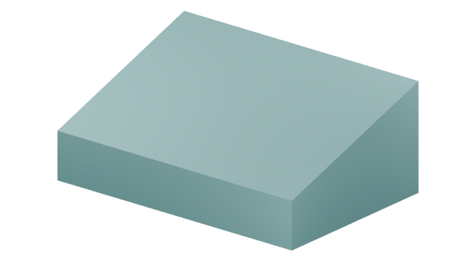
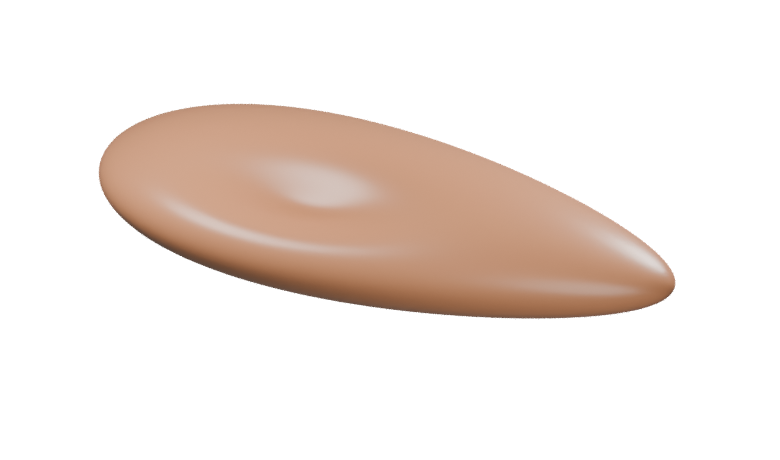

两个外形均已在 Blender 中生成并重新打开。选择文件可查看几何和可编辑项。

“放桌上，操作面朝向我；前面低，后面高。”
画四边形侧断面，沿宽度拉出，保留底面中心和前后方向。
FreeCAD 按同一断面建壳、挖内腔。壁厚可以改；样例 STEP 是开口底壳，不含操作面盖板。

“做成手握的水滴形，前端收窄，拇指处留凹窝。”
沿长度改变截面，再局部压出凹窝。外形文件里可以调整凹窝深度并继续细分。
保留外皮作参照。在 CAD 里拟合握持曲面，核对凹窝、分件线与最薄处，再做内部结构。
本页回放两项本机实验。开放输入、自动选工具与持续对话仍待接入 Studio。 返回五步工作台